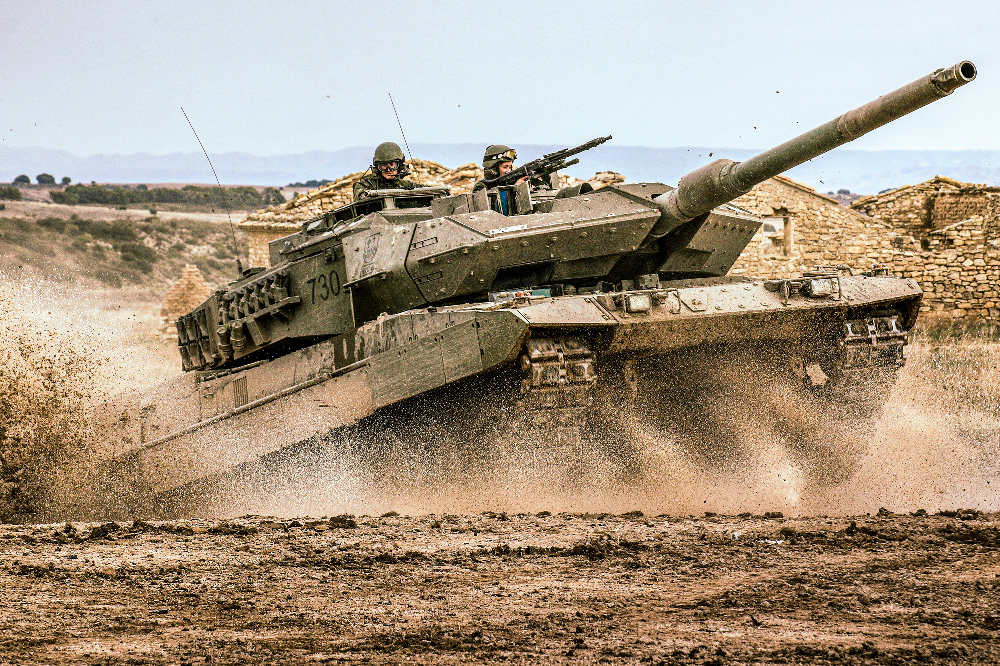
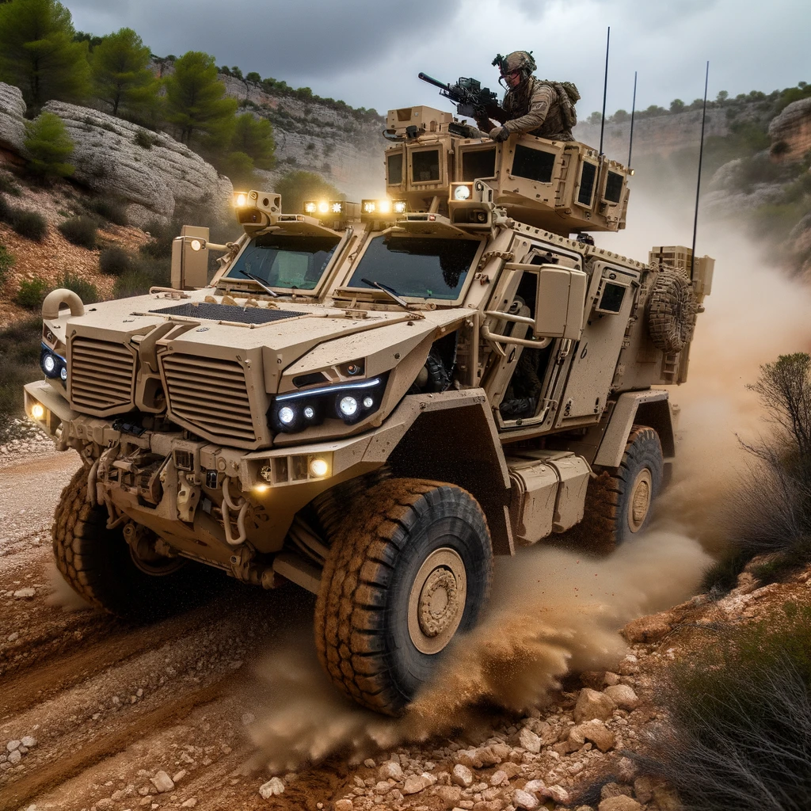

Menu1

leopardo
Leopardo 2E
Pizarro

Veiculo de combate infanteria.
Un vehicle blindat dissenyat
per transportar tropes al camp de batalla amb protecció i potència
de foc.
Obús 155/52 SIAC

Sistema Integrat d'Artilleria de Campanya
Un sistema d'artilleria mòbil que proporciona suport de foc a les
tropes al camp de batalla.
VAMTAC

Vehicle d'Alta Mobilitat Tàctic
Un vehicle versàtil i lleuger
utilitzat en una varietat de rols, incloent transport de tropes i
com a ambulància.